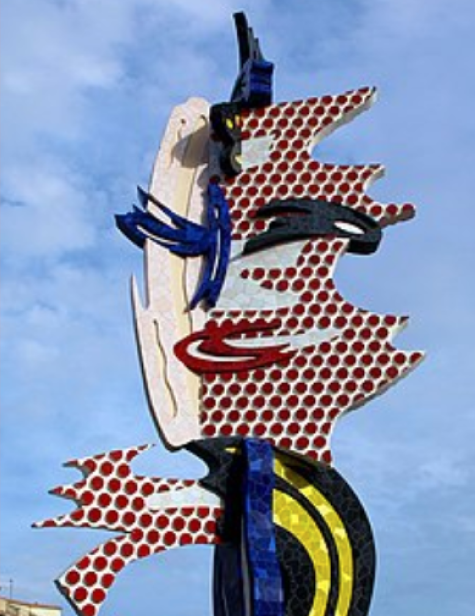
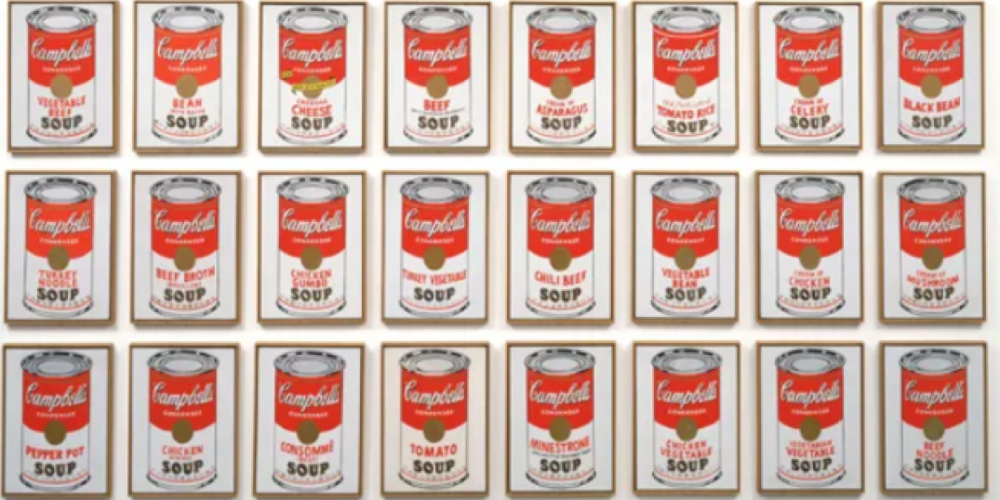

¿Qué es?
Esta corriente artística llamada Pop Art, se enfoca en la estética de la vida cotidiana y el consumo de la época. Se inspira en cómics, ilustraciones y la creación de collages con objetos fuera de contexto. Además, se distingue por esculturas llamativas y arquitectura colorida y extravagante influenciada por este movimiento artístico.
Pop Art
Se originó en Gran Bretaña a fines de la década de 1950, extendiéndose a Estados Unidos en 1960. Alcanzó su popularidad en 1980 y se difundió globalmente, llegando a más países como Alemania, España, Italia, Japón y América Latina.